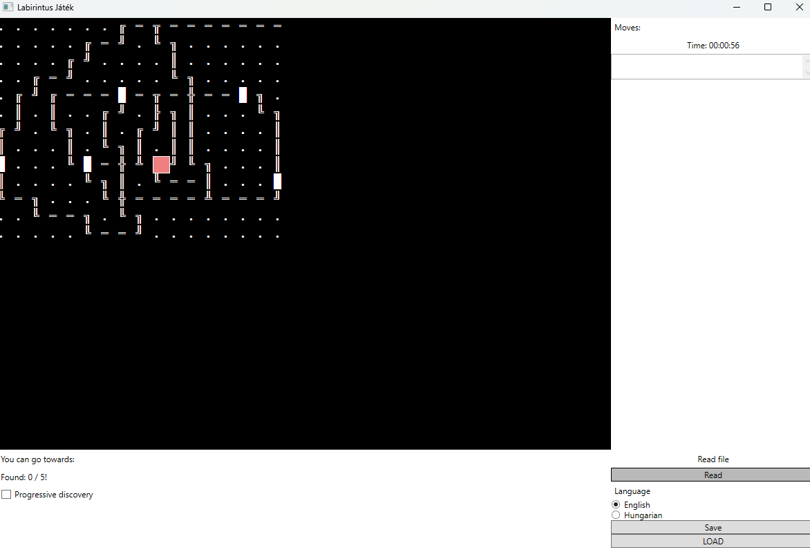
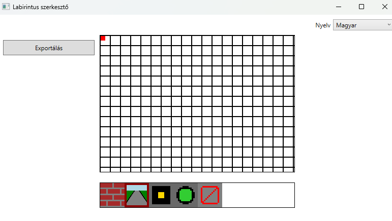
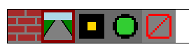

Két egyszerű Windows-program…
Mi ez a projekt?
A Labirintus egy szöveges…
A Labirintus szerkesztő…
Röviden
- Játék: felfedezés…
- Szerkesztő: pályarajzolás…
- Közös nyelv: .SAV fájl…
Hogyan működik a játék?

Cél
Indulj egy véletlenszerű bejáratról…
Irányítás
W – fel, S – le…
Idő
Induláskor egy perc…
Felfedezés (köd)
Bekapcsolhatod a „ködöt”…
Fájlok a játékban
- Olvasás: egyszerű .txt…
- Játék betöltése: .SAV…
- Mentés: aktuális állapot…
Mit jelentenek a jelek a pályán?
A pálya szöveges karakterekből áll…
- Járatok: vonalak…
- Kincs / terem: █…
- Kijárat: a pálya szélén…
- Üres / fal: üres hely…
Hogyan működik a pályaszerkesztő?

Csempék

- Fal – akadály…
- Járat – húzással rajzolod…
- Kincs (terem) – csak járatra…
- Kezdőpont – csak egy lehet…
- Törlés – eltávolítja…
Rajzolás és nézet
- Bal egérgomb…
- Középső gomb…
- Görgő…
- Csempeválasztó…
Exportálás
Az Exportálás gomb…
Szerkesztő → játék
- 1. Rajzold meg…
- 2. Exportálás…
- 3. A játékban…
Tipp: először járatokkal…